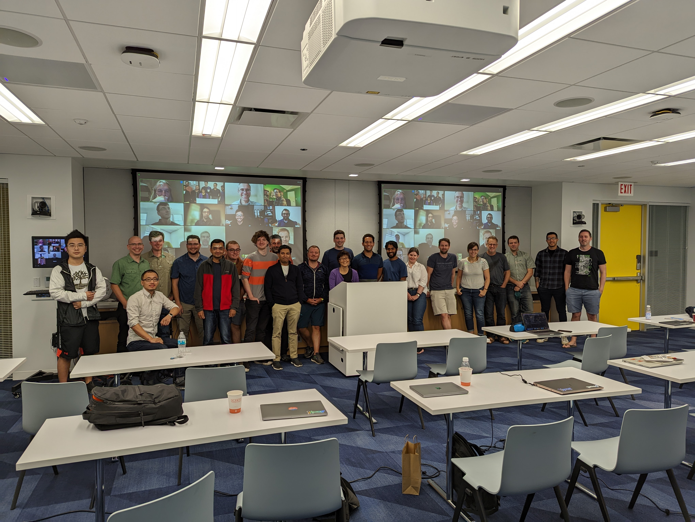

ParslFest 2023 - The Parsl Community Meeting (Oct 19-20)
The fifth ParslFest Community Meeting will be held as a hybrid meeting on October 19-20, 2023. It will start around noon on the 19th with talks that day, and on the morning of the 20th. The afternoon of the 20th will be an open hacking session for hands-on work, hacking, testing, bring-your-own-code, etc. The in-person component will be held at the University of Chicago.
The meeting brings together researchers, developers, and cyberinfrastructure experts from around the world to discuss experiences using and developing Parsl and Globus Compute (previously funcX)---a federated function-as-a-service platform built upon Parsl.
Registration is free and we would love for you to present a lightning talk describing your work with Parsl or Globus Compute/funcX
We have some funding available to support travel (flights and accomodation) to the workshop. Please contact Kyle Chard (chard@uchicago.edu) for information.

Logistics
Registration (free): https://forms.gle/2VHarhjA7hHsVydHA.
Contact us at parsl@googlegroups.com.
Prior ParslFest Meetings
Parsl community meetings have brought together hundreds of researchers, developers, and cyberinfrastructure experts for meetings that included presentations and discussions.
The ParslFest 2019 page includes the agenda and all presentations (slides) from ParslFest 2019.
The ParslFest 2020 page includes the agenda and all presentations (slides and videos) from ParslFest 2020.
The Parsl & funcXFest 2021 page includes the agenda and all presentations (slides and videos) from Parsl & funcXFest 2021.
The Parsl & funcXFest 2022 page includes the agenda and all presentations (slides and videos) from Parsl & funcXFest 2022.